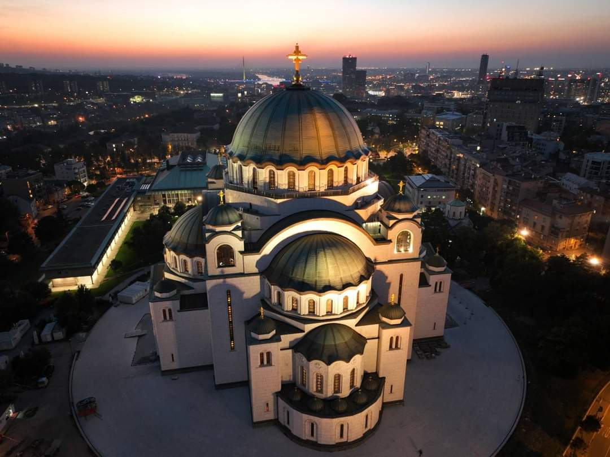
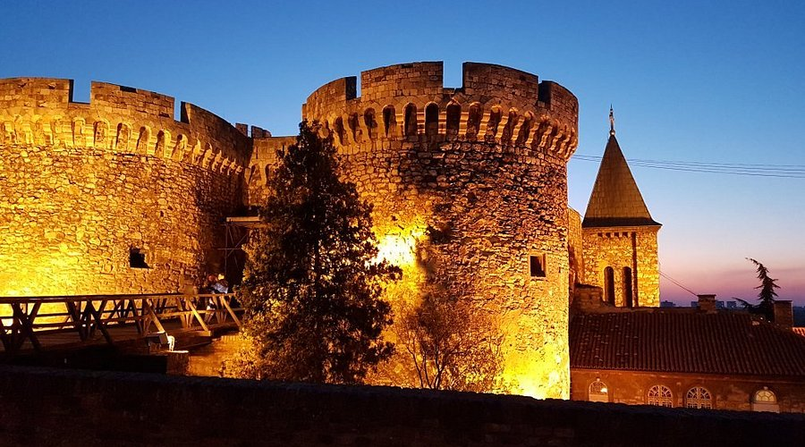
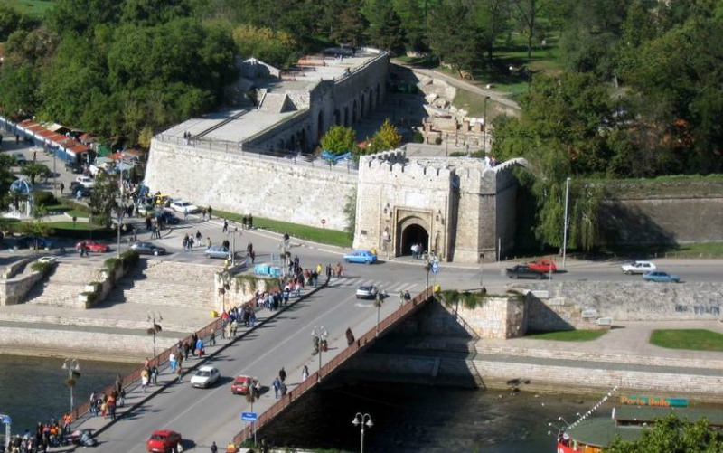
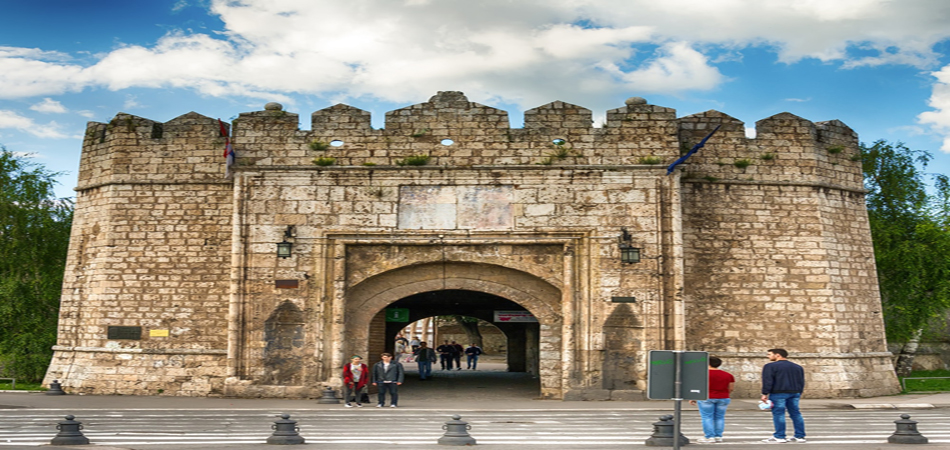
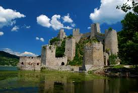

St. Sava Temple, Belgrade


St. Sava Temple in Belgrade rises majestically as one of the largest Orthodox churches in the world, its gleaming domes and intricate
mosaics a testament to faith, artistry, and endurance. Bathed in light, the temple’s interior invites awe, with soaring ceilings,
detailed frescoes, and a serene atmosphere that inspires reflection. Set against the city skyline, St. Sava is more than a place of
worship—it is a symbol of Serbian heritage, spiritual devotion, and architectural grandeur, drawing visitors to experience both its
sacred beauty and its cultural significance.
Best time to visit:
Morning or late afternoon for softer light and fewer crowds. Spring and early autumn are ideal for comfortable weather.
Opening hours:
Daily, approx. 9:00–18:00 (may vary for religious services).
Entry:
Free entry to the main hall and church grounds. Some areas may require modest donations.
SEE MAP
Studenica Monastery
Studenica Monastery, nestled in the serene valleys of central Serbia, is a jewel of medieval architecture and spiritual heritage.
Founded in the 12th century by Stefan Nemanja, it radiates tranquility through its white stone walls, intricate frescoes, and sacred
atmosphere. Every corner whispers tales of faith, devotion, and the artistic brilliance of its time. Visitors can wander through its
hallowed halls, admire the delicate iconography, and feel the quiet reverence that has preserved its legacy for centuries—a timeless
sanctuary where history and spirituality meet.
Best time to visit:
Spring and early autumn for mild weather and vibrant surroundings. Morning visits are peaceful and less crowded.
Opening hours:
Daily, approx. 7:00–19:00.
Entry:
Free entry to the monastery complex. Donations are welcome for preservation and maintenance.
SEE MAP
Kalemegdan Fortress, Belgrade


Kalemegdan Fortress in Belgrade is a majestic sentinel overlooking the confluence of the Danube and Sava rivers, where history whispers
from every stone. This sprawling fortress, with its ancient walls, towers, and gates, tells tales of empires, battles, and centuries
of life at the heart of the city. Stroll along its ramparts, explore its museums, and savor panoramic views that stretch across rivers
and parks. Kalemegdan is more than a fortress—it’s a living canvas of Serbia’s past, a place where every corner invites discovery and
every sunset paints a story of resilience and beauty.
Best time to visit:
Spring and autumn for mild weather and fewer tourists. Sunrise or sunset offers the best views over the confluence of the Sava and Danube rivers.
Opening hours:
Daily, approx. 6:00–21:00 (summer hours may be extended).
Entry:
The fortress and park are free to enter. Museums or galleries inside may have a small fee (approx. €1–€5).
SEE MAP
Niš Fortress, Niš


Niš Fortress, standing proudly at the heart of Niš, is a testament to centuries of history and resilience. Encircled by sturdy walls
and graceful gates, it whispers tales of Roman legions, Ottoman rulers, and the bustling life of the city around it. Stroll along its
cobblestone paths, explore its towers, and feel the echoes of the past blend seamlessly with the vibrant present. A visit here offers
a poetic journey through time, where history, culture, and the spirit of Niš come alive.
Best time to visit:
Spring and autumn are ideal for mild temperatures and fewer crowds. Early morning or late afternoon is perfect for photos and a calm walk around
the fortress.
Opening hours:
Daily, approx. 8:00–20:00 (hours may vary seasonally).
Entry:
Free to explore the fortress grounds. Some museums or exhibitions inside may have a small entrance fee (approx. €1–€3).
SEE MAP
Đerdap National Park & Golubac Fortress


Đerdap National Park, stretching along the majestic Danube River, is a haven of natural beauty and ancient history. At its heart lies
Golubac Fortress, a medieval stronghold perched dramatically on rocky cliffs, guarding the river for centuries. Wander through winding
towers and battlements, breathe in the crisp river air, and take in panoramic views where lush forests meet the shimmering waters.
This is a place where nature’s grandeur and human history intertwine, offering visitors both adventure and reflection amid Serbia’s
timeless landscapes.
Best time to visit:
Late spring to early autumn, when the Danube is calm and the greenery is vibrant. Early morning or late afternoon is ideal for photos and
avoiding crowds.
Opening hours:
Daily, approx. 8:00–18:00. Individual sites within the park, like Golubac Fortress, may have slightly different hours.
Entry:
National park grounds – free. Golubac Fortress – small entrance fee (approx. €2–€5), guided tours may be extra.
SEE MAP
Novi Sad Petrovaradin Fortress
Petrovaradin Fortress in Novi Sad stands proudly on the banks of the Danube, a majestic sentinel overlooking the city. Often called
the “Gibraltar of the Danube,” its sprawling walls, underground tunnels, and historic bastions tell stories of centuries past, of
battles fought and cultures interwoven. From its ramparts, visitors are treated to breathtaking panoramas of Novi Sad, the river,
and the surrounding landscapes. More than a fortress, it is a living monument—hosting festivals, concerts, and art—where history,
culture, and scenic beauty come together in an unforgettable experience.
Best time to visit:
Early morning for peaceful exploration or late afternoon to catch sunset views over the Danube. Spring and autumn offer mild temperatures.
Opening hours:
Daily, approx. 8:00–19:00 (varies seasonally). Some museums and galleries inside the fortress may have shorter hours.
Entry:
Free to explore the fortress grounds. Entrance fees may apply for specific museums or exhibitions inside (approx. €2–€5).
SEE MAP